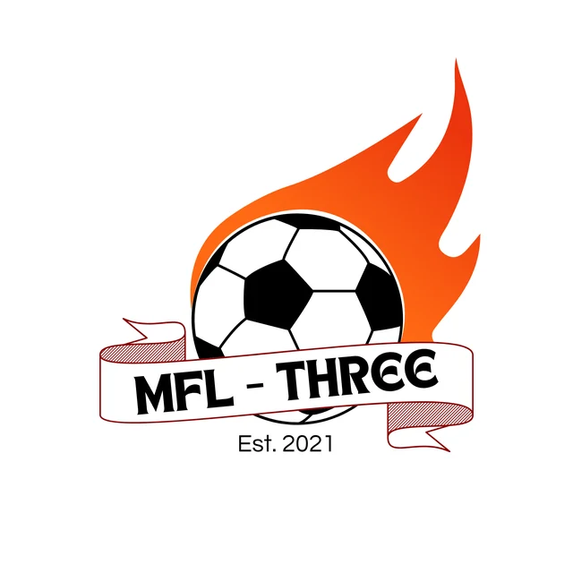

GRAND FINAL
Tasin Champions
Final: Tasin vs Miraz
CHAMPIONTasin
RUNNER-UPMiraz
Historical Season 3 records, match results, individual awards and scoring records.

Final: Tasin vs Miraz
Other recorded scorers include Meraj 4, Orik 4, Rakib 3, Sadab 2, Abu 2, Billa 1, Lion 1, Taqit 1, Elhan 1, Zihad 1, Abid 1 and Tasin 1.